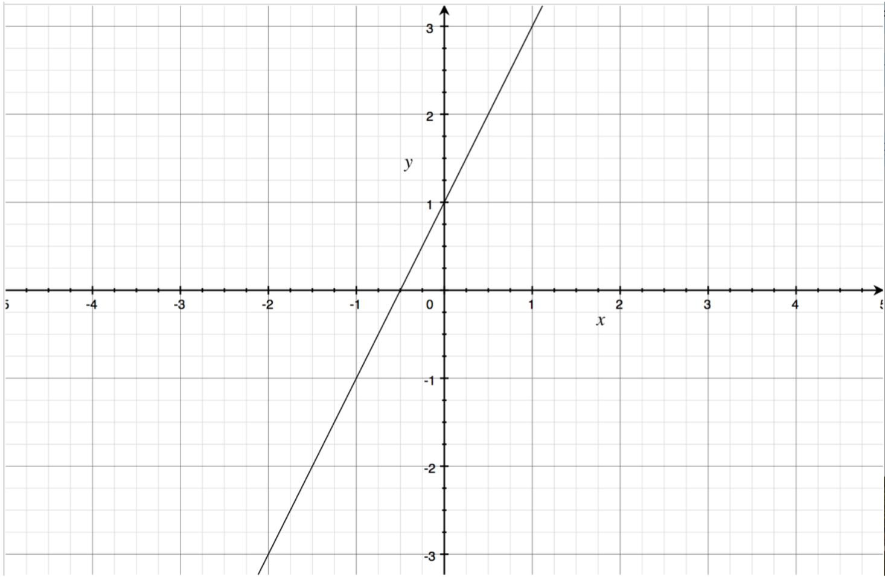
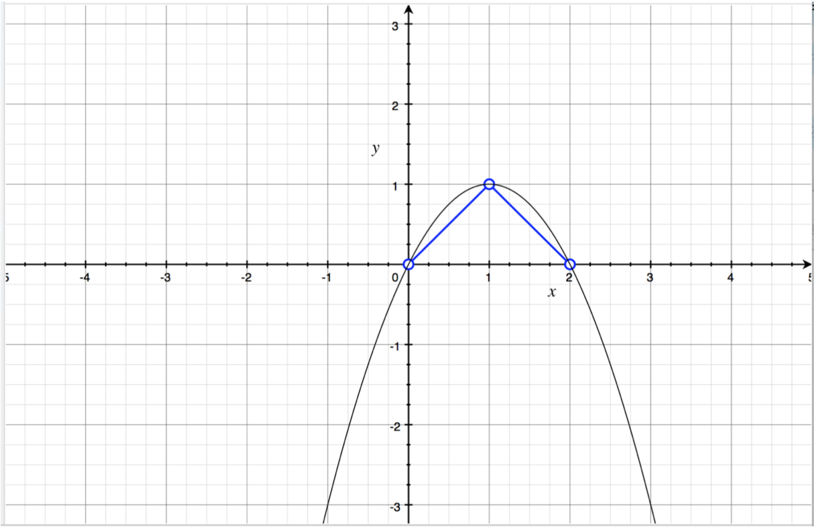

在不久，或是很久之前，我们做了一道高精度乘法的题目，这倒霉的题非常的不适合我们这些萌新。虽说压位可以过，但对时间系数上的优化并不王道，而分治算法代码的复杂度并不亚于FFT，时间复杂度上的优化也不多，故仍然不王道。
然而看到FFT，快速傅立叶变换，这样一个名字总是令人觉得它十分的高大上而敬而远之。我以前也是由于这个原因拒绝学习这个方法，直到某一天，我突然不知为何（也许和我突然决定学习编程那一天一样，是耳畔响起了上帝的低语）特别想了解一下这个玄而又玄的算法。
翻开《算导》一看才知道，如果只是想要大概了解这个方法做了什么一个事情，大概是个什么原理，而非对其进行严格的数学证明，其实不需要什么高深的数学知识。
故作此篇，以用一种比较容易理解（只要求高中数学知识）的方式来解释FFT，兼以备忘。
多项式的点值表示
我们先来看看这样一个问题，现在有一些如下形式的多项式函数：
如果要把这样一个多项式函数保存在计算机中，可以采取什么样的方法呢？
最容易想到的是储存所有的系数：
但是也有另外一种方法可以储存，让我们借助几个例子来理解：
假如我们令：$\ n=2,a_0 = 1,a_1 = 2 $
那么就有：
这显然是一条直线：
而我们当然知道，这条直线可以用两点来确定，例如选取：$\ \{(0,1),(1,3)\} $
这两点，就能唯一确定这个多项式了。
如果你还记得初中学习的二次函数的内容的话，你就会想起一个二次函数能被三个点唯一确定。
例如这幅图就告诉我们，可以用：$\ \{(0,0),(1,1),(2,0)\} $
这三个点唯一确定一个二次函数：$\ f(x)=0+2x-x^2 $
推而广之，对于更高次的函数，我们也可以用它图像上的几个点来唯一确定它，即：
对于任意一个多项式函数：
我们都可以将其表示为：
这就是多项式的点值表示。
注意此处的$x_0～x_{n-1} $可以在$f(x)$的定义域内任意选择，所以一个多项式的点值表示并不唯一。
那么这样表示有什么好处呢？
我们来看一个问题：如何将两个多项式相乘：
如果我们用多项式的系数表示来计算：
可见需要9次乘法，所以这是一个$O(n^2)$算法。
而在点值表示下（注意$P_1 $和$P_2 $的取的点的个数要根据确定结果所需点的个数来定）：
可见只用到了5次乘法（计算方法是$n_1 + n_2 - 1$，$n_1$、$n_2$分别是$P_1$、$P_2$的次数），这是一个$O(n)$算法。
同理除法也可以做类似的优化。
加法和减法在点值表示下也能用类似的方法完成，不过此时相对于系数表示并无优势。
在进行多项式的乘除法的时候，多项式的点值表示比起系数表示效率高得多。
然而有一个问题，多项式的点值表示进行运算虽然方便，但得到的结果仍然是点值表示的多项式，点值表示并不能像系数表示那样方便地转化为我们人平常容易阅读的形式（你总不会在初中数学卷子上让你求二次函数的地方写上一个“过点$\ (0,0),(1,1),(2,0) $的函数”吧？），而且输入一个多项式时一般会输入系数表示而非点值表示。所以我们就要找到一种方法，可以方便快速地完成点值表示和系数表示之间的互相转化，and it is what FFT(DFT&IDFT) does！
离散傅立叶变换（DFT）
我们先来完成将一个多项式的系数表示转化为点值表示这件事，这件事的名称叫离散傅立叶变换（DFT）。
乍一看这是件很简单的事，只需要任意选取$n$个$x$将其带入式子直接求出$y$即可，然而这就需要把$n$个$x$对式子里的每一项都进行一次乘法，这就需要$O(n^2)$的时间复杂度。
然而，通过仔细地选取这些$x$的值，我们可以将这个时间复杂度降到$O(nlgn)$，怎么做？
现在准备好你的脑子（我自己都不够用，所以不发脑子，请你们自己带好），我们需要一点点数学知识了，不过别担心，这些数学知识绝对没有难到你不能理解。
Something About Math
世间最美的公式
这就是大名鼎鼎的欧拉公式，它把人类数学史上的数个重大发现：有理数（$1$和$0$，这两个恰好是最重要的有理数）、无理数（$e$和$\pi$）、复数（$i$）用最基本的加法和等号联系在了一起，高斯曾经说过：
一个人第一次看到这个公式而不感到它的美丽，他不可能成为数学家。
（也许我不能成为数学家了……，第一次看到这个公式连$i$是啥都不知道）
由于说好了不说难以理解的数学知识，在此不对这个公式进行证明。其实是我不会证（好吧，泰勒展开可证）。
$n$次单位复根
$n$次单位复根是指满足方程$z^n = 1$的所有复数。
根据上面的欧拉公式，显然有：
我们将$e^{\frac{2i\pi} nk}$这一个$n$次单位复根记为$\omega^k_n$。
将$\omega^k_n$扩展到所有整数上，有：
例如，方程$z^3=1$，根据我们高中学习过的立方虚根，可以得到：
即：
再例如，$z^4=1$：
参考上面的例子，我们可以发现，对于偶次单位复根，有性质：
即，对于每一个偶次单位复根，总有另一个单位复根和它互为相反数。
快速傅立叶变换（FFT）
快速傅立叶变换使用了分治的思想，他将一个多项式按照奇偶项分成了两个部分（假设这个多项式恰好能被分为两份，如果不能，可以补充一项系数为$0$的项）：
然后问题就变为了求$f_0(x)$和$f_1(x)$两个子多项式的点值表示，然后用这两个子多项式的点值表示推算$f(x)$的点值表示。
值得注意的是，利用公式：
只能得到$\frac n 2$个点值（因为$f_0(x)$和$f_1(x)$都是$\frac n 2$次多项式），而我们一共需要$n$个点值来确定一个多项式，但是如果我们使用了上面讲的偶次单位复根的性质，就可以用下面的公式：
来计算出另外那$\frac n 2$个点值。
可见用这种方法我们将一个问题分拆成了两个规模减半的子问题，根据经验，这样做的时间复杂度是$O(nlgn)$（实际上是可以证明的，但在此出于文章简单性考虑不作证明）。
上面的公式未免有些令人头大（该死的希腊字母），我们还是通过例子来讲解。
比如，我们要将$f(x)=3x^3+2x^2+6x+1$化成点值表示，那么我们可以先分解出两个多项式：
接着我们需要分别将$f_0(x)$和$f_1(x)$化为点值表示，根据转化规则，两者的点值表示分别是：
由此已经可以得到：
即：
而我们可以借由公式计算出：
所以最终可以得到$f(x)$的完整点值表示：
可以看出使用单位复根确实成功地将计算规模减小了一半！
逆DFT（IDFT）
现在我们已经会快速地把系数表示的多项式转化为点值表示了，那么怎么把点值表示的多项式再倒回来变成系数表示呢？
我觉得这远比正向的把系数表示转化为点值表示难，也许是我没学过线性代数的原因。
其实这就相当于解这个线性方程组中的 $a_k,k=0,1,2…n-1$：
用线性代数中的矩阵可以写成（别担心，用高中的线性代数知识完全可以理解的）：
我们考虑这样一个式子：
或者以矩阵的形式表示：
由于某些超过我们能力的数学因素（这里利用到了单位复根的性质），这些式子的结果如下：
根据线性代数运算中的一些运算法则（请自己查阅有关逆矩阵的资料，或者干脆把这当作是黑箱），结合上面几个式子，可以得到：
即：
现在我们将$a_k,k=0,1,…,n-1$看作是一个关于变量$\omega^k_n$的线性函数，将$f(\omega^k_n),k=0,1,…,n-1$看作是函数 各项之前的系数，你就会发现，我们要求$a_k$，其实就是求一个系数表示的函数：
的点值表示！
即用上面的$A$计算下面的$P$：
然后提取出其中的$a_k$即可。
这不就是我们刚刚学的DFT吗，我们同样也可以用FFT在$O(nlgn)$的时间内完成！
（用FFT转过去，还用FFT转回来，神奇）
用FFT来解决大整数相乘
一个$n$位的大整数，就是把一个多项式函数$f(x)$中的$x$带入$10$的计算结果。
这样的话，大整数相乘就是这样一个思路：
- 将每个大整数的各位作为一个多项式系数放入一个数组
- 对数组代表的多项式进行DFT，得到这些多项式的点值表示的数组
- 将这些点值表示的数组逐项相乘，获得结果多项式的点值表示的数组
- 将结果用IDFT转回系数表示
- 将结果多项式的系数作为大整数的各位输出
有了上面介绍的FFT，这些操作就能在$O(nlgn)$的时间复杂度内完成！
更多
听说还有一种神奇的算法叫快速数论变换（FNT），它用“原根”替代“$n$次单位复根”，避免了使用浮点数表示的复数来做FFT带来的精度问题，不过我的数学太差，算不出来（不，我和CSL大佬不一样，我数学是真的差）。要是有能把我讲懂的就请多多指教了！
第一次写算法文章，累到吐血。